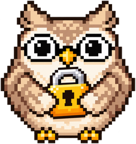
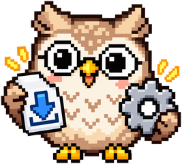
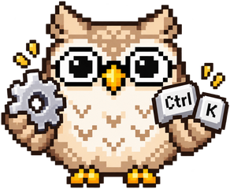
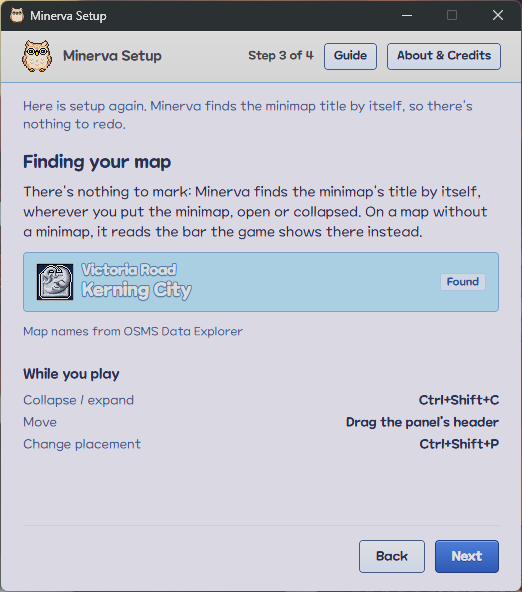
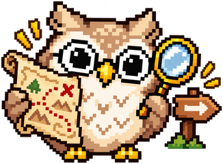
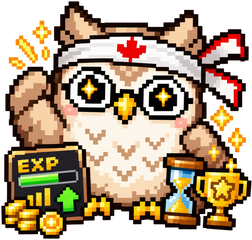
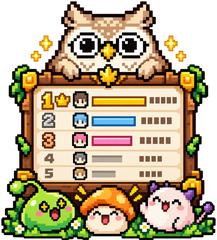
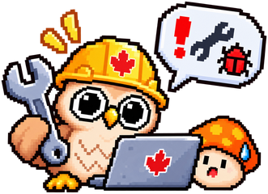

Minerva
What would you like to know? Pick a topic, or tell me a word and I'll find its questions.

Safety & your account
The risk to your account, what Minerva looks at, and what it downloads and keeps.
Can I get banned for using Minerva?
It's very unlikely. Minerva only looks at the screen, the way a screenshot does. It never touches the game's memory or files, and it never presses keys or clicks for you. Other tools read the game's screen the same way.
Still, Minerva is a third-party tool. Nexon didn't make it and hasn't approved it, so there's no guarantee: using it is at your own risk.
Does Minerva read or change the game?
No. Like a screenshot, it captures only what it needs:
- The minimap title.
- The bar at the bottom of the game, with your EXP, level and name.
- The Pickup Log in the bottom-right corner, while the Grind Tracker is on.
- The tooltip by the pointer, when you press an item hotkey.
- The game window a few times a second while the Deal Finder is on, to find a Player Shop.
It never reads or changes the game's memory or files, never injects anything into it, and never presses keys or clicks for you.
Are Minerva's hotkeys a keyboard hook?
No. They're ordinary hotkeys registered with Windows, and they act only while the game or one of Minerva's windows is in front. The game never sees them, and in any other app the same keys do whatever that app uses them for.
Can I check what Minerva does for myself?
Yes. Minerva's source code is public on GitHub for anyone to read. It's under the MIT licence, so anyone may reuse the code, but not the name Minerva or its owl.
Is Minerva free? Does it need an account?
It's free, and you never need to sign up. Minerva has no analytics, and its check for a new version sends only the version you have (see how).
You don't need an account to put a character on the Map Leaderboards either. A secret key that Minerva makes on your PC ties the name to you (see what the site shows). You can link your PCs to Discord from Minerva so your names follow you to a new PC, but you never have to.
Who makes Minerva?
@egberticus. Ask about Minerva, or say what you'd like it to do, on Minerva's Discord. If something's wrong, save a Bug Report instead, because it shows what Minerva read.
What does Minerva download, and what does it send?
- Map and mob data
- Five files from OSMS Data Explorer, under 1 MB in all. Minerva gets them when it starts, if its copy is a day old or came from an earlier version. It also gets them every 24 hours while it runs, and when you refresh them.
- Item data
- Two more OSMS files, about 1.2 MB in all, on the same schedule.
- Pictures
- The picture of the map the panel shows, and its mobs' animations. Minerva downloads them once and keeps them until they go unused for 30 days. It gets an item's picture only when a card lists the item for you to pick from.
- New versions
- A small file from GitHub that names the newest release. Minerva gets it when it starts, every 6 hours while it runs, and when you ask. See how it updates.
- Your characters' bests
- The bests the Map Leaderboards hold of a character you share. Minerva asks for them with your Leaderboard Key before it first sends that character's bests from this PC, and after your bests file didn't load. It adds any your PC doesn't have. See why.
- Market prices
- The Going rate and Cheapest now for each item whose card you open, and for the Player Shop listings the Deal Finder compares. Minerva gets them from maplestory.market through owlofminerva.app. See what it sends for them.
Item Lookup also searches NiaMeowDB for an item's name when you press its hotkey or click an Item Card's name. It looks up each name once a week at most.
With each request, Minerva sends the version you have, and the item numbers when it asks for prices. It also sends the bests of each character you share on the Map Leaderboards (new characters are shared by default): their name, job, level, EXP per hour and dates, along with your Leaderboard Key. The site keeps the key only as a hash. Turn Share off under a character's name in your Personal Bests and nothing of theirs is sent. The site asks ClassicRank for each shared character's portrait, using only their name.
What does Minerva keep on my PC?
-
Your settings (placement, folded sections, hotkeys, a hand-picked game window and the rest of
Settings) in
%APPDATA%\.com. itechify. minerva\ settings.json -
In the same folder: your Personal Bests (each character's best visits on each map) in
personal-bests.json, the market prices you keep inmarket-prices.json, and the 10 newest Bug Reports you've saved inBug Reports. -
Once you put a character on the Map Leaderboards, the same folder
also holds
leaderboard-key, the secret Leaderboard Key that ties their name to you. Keep it to yourself, and copy it across when you move to a new PC (or link Discord). -
The map and item data, pictures and animations in
%LOCALAPPDATA%\.com. itechify. minerva\ cache

Install & updates
What you need, which file to download, and how to update.
What do I need to run Minerva?
64-bit Windows 10 or 11, and MapleStory Classic World played windowed or borderless. The minimap has to be showing somewhere in the game window, open or collapsed.
Minerva has been tested mostly with the game windowed at 1920×1200 and its UI size set to Default Ratio. Other resolutions and UI sizes should work. If something reads wrong at yours, send a Bug Report.
Does Minerva work with the game fullscreen?
No. Screen capture can't see exclusive fullscreen, so play the game windowed or borderless.
Which file should I download?
- Minerva_@VERSION@_x64-setup.exe Recommended
- Installs just for you, over any earlier version, and adds a Start menu entry and an uninstaller.
- Minerva_@VERSION@_x64_en-US.msi
- The same, as an MSI package. It installs for all users, so it asks for admin rights.
- minerva-@VERSION@-portable.exe
- No install: run it from any folder. It needs the Microsoft Edge WebView2 runtime, which Windows 11 already has.
The MSI and portable files are on the release's page.
Why does Windows say it "protected your PC"?
Minerva's files aren't code-signed, so Windows SmartScreen doesn't know them yet. Choose More info, then Run anyway.
How do I update Minerva?
From inside Minerva. When a new version is out (see how it checks), click Minerva's owl in the notification area, by the clock, and choose Update to the new version. You can also press Update in Help & Setup's About & Credits. Minerva downloads the update, installs it with a small progress window, and starts again. Your settings, hotkeys and Personal Bests carry over. Each release says what's new.
The portable .exe doesn't update itself. Its owl's menu opens the new version's release
page instead. To update it, quit Minerva first (choose Quit Minerva in the owl's
menu), then download the new portable .exe and run it. Your settings and Personal Bests
carry over.
Does Minerva update itself?
Not without asking you. Minerva checks GitHub for a new version when it starts, every 6 hours while it runs, and when you press Check for updates in Help & Setup's About & Credits. The check sends only the version you have.
When a new version is out, the owl says so at the top centre of the game window until you click it or hide it, and again the next time Minerva starts (see why). The owl in the notification area and Help & Setup tell you too, with a What's new link. Nothing downloads until you choose to update. Later just leaves the notice where it is.
When you update, Minerva downloads the new version and checks that it's signed as Minerva's own.
Then it installs it with a small progress window and starts again. If you installed the
.msi, Windows asks for admin rights first.
If the download fails, or the file isn't signed as Minerva's own, Help & Setup says so and nothing is installed. Try again, or download it from the release's page. If the installer fails, it says why, and you keep the version you have. Minerva only ever installs the version it told you about, and never an older one.
Updating restarts Minerva, so if you're grinding, it asks first: "Updating restarts Minerva and ends this Session." Choose Update now, or choose Update when I quit to install it without restarting, the next time you choose Quit Minerva. If the update is still downloading when you quit, the owl says it's finishing first, and Quit now, without updating skips it. Your Personal Bests are saved either way.
The portable .exe never installs anything. It tells you the new version is out and
links to its release page (see how to update it).
To stop the checks, turn off Check for updates in Settings, the gear at the top of the panel. The button in Help & Setup still checks when you press it.
Why is an owl talking to me over the game?
That's Minerva. The owl sits at the top centre of the game window, clear of everything Minerva reads. It tells you how an Item Lookup went, and when a new version is out. Click its bubble to open Help & Setup's About & Credits, where you can update. Click its × to hide it until Minerva starts again. Choosing to update hides it too. It doesn't move or make a sound, so you can leave it there while you play.
If you found a new version yourself with Check for updates, it shows only in Help & Setup, where you're already looking. With Check for updates turned off in Settings, the owl never mentions new versions.

Setup & hotkeys
The first run, finding your map, and changing the hotkeys.
Setup
What happens the first time I start Minerva?
A setup window walks you through:
- The account warning.
- Finding the game window, or picking it by hand.
- Setting up the game: windowed or borderless, with the minimap showing, open or collapsed.
- Finding your map: Minerva finds the minimap title for you and shows the map it names.
- The Grind Tracker. You don't need to mark anything for it.
Finish starts the overlay. If you close setup on its first run, Minerva quits.

Do I have to mark the EXP bar?
No. Minerva finds the EXP bar in the game's bar at the bottom of the window and reads the Grind Tracker's figures from it. That works wherever the game window is, whatever its size, and at any of the game's UI Size settings. If you marked the bar in an earlier version, that mark isn't used any more. To turn the Grind Tracker off, or back on, use its switch in Settings.
How do I open setup again?
Press Ctrl+Shift+S, or choose Help & Setup on the panel or on the owl in the notification area. There you can see the map Minerva found, or read the Overlay Guide. The guide lists your hotkeys and explains placement and the hunting figures. About & Credits, beside it, links back to this site.
Where is Minerva while it runs, and how do I quit it?
Its owl sits in the notification area (the system tray, by the clock). Click it for Help & Setup, Bug Report or Quit Minerva. That's the only way to quit, whether or not the game is open. Only one Minerva runs at a time, so starting it again brings up the one that's already running.
Hotkeys
How do I change a hotkey?
- Click the gear at the top of the panel, or Change hotkeys in setup's Overlay Guide. Settings opens in its own window beside the panel. You can drag it anywhere, and close it with its × or the gear.
- Click the hotkey's Change.
- Press the new combination, or Esc to cancel. While Settings waits for keys, Minerva releases its hotkeys, so the keys you press go to Settings instead of setting off a hotkey.
A combination must include Ctrl, Alt or Win. Ctrl+Shift plus a key is safest, because by default MapleStory attacks with Ctrl and jumps with Alt.
What if the keys I want are already taken?
If another Minerva hotkey uses them, Swap trades the two. If Windows or another app has them, the panel and setup say which one, and Settings marks the row.
Can I turn a hotkey off?
Yes. Choose Turn off, or press Backspace or Delete while it waits for keys, and the game gets those keys back. The hotkey's button at the top of the panel still works. The Item Card and Item Lookup have no button, so you can't use them while their hotkey is off.
Can I undo a change to the hotkeys?
Every change takes effect at once and is saved. Restore defaults puts every hotkey back to its default and turns it on. Undo then brings yours back, until you change another hotkey or close Settings.
The panel & the map
Moving and placing the panel, the Map Preview and its Hidden Portals, the mobs, and maps that share a title.
The panel
What does the panel show?
The map you're on, with its name and its Map Mark, then three sections: the Map, Navigation (while you have a Hunting Target or a Destination) and the Mobs. Click a section's heading to fold it, and click it again to open it. A folded section stays folded as you change maps, and the next time you start Minerva.
What's the emblem beside the map's name?
That's the map's Map Mark. The minimap shows the same emblem beside its title for the area the map is in, like Henesys's shield, Kerning City's stone or Sleepywood's skull. Every other map the panel names, such as a portal's destination or a stop on your route, has a smaller one, so you can tell where that map is.
What do the panel's buttons do?
Rest the pointer on a button to see its hotkey. Click the map's name to open its MeowDB page.
Does clicking the panel take the keyboard from the game?
No. Click it whenever you like, and the game keeps the keyboard. Only the search view takes it while it's open, and Settings as it opens and while you change a hotkey or type the Deal Margin. Click back into the game and the keys go back to the game. The search view closes, and Settings stays open.
How do I move or resize the panel?
Drag its header to move it. Drag a side or a bottom corner to make it wider or narrower. Its height fits what it shows, and a long list scrolls instead. If you drop it on the minimap title, it moves just clear so Minerva can still read the title.
Can I put the panel outside the game, or on another monitor?
Yes. Ctrl+Shift+P switches between four placements:
- Inside: it keeps the spot you dragged it to in the game window. It starts on the window's right edge, a third of the way down.
- Docked right or left: it follows the game window's outside edge, and goes inside when there's no room on screen.
- Detached: it stays wherever you drag it, on any monitor, with a taskbar entry of its own.
Why does the panel disappear?
It shows on top of everything, but only while the game or one of Minerva's windows is in front. It hides while another app is in front or the game is minimised. So opening a MeowDB page in your browser hides it until you go back to the game.
Does the panel show up in screenshots and streams?
Yes. It's a window of its own over the game, so whatever captures your screen captures it too.
Can I fold the panel out of the way?
Yes. Press Ctrl+Shift+C, or click the panel's minus button, to fold it to an icon. The icon shows the map's Hidden Portal count, and an orange dot when something needs a look. Click the icon to open the panel again.
The Map and its Hidden Portals
What do the rings' colours mean?
- Blue: to another map.
- Green: within the map, with a dashed arrow to where it lands.
- Grey: to a map Minerva doesn't know.
- Wide magenta: the next portal on your way to a Hunting Target or a Destination.
- A green dot in magenta: where the NPC you picked in search stands, once you're on their map.
A dashed ring is a portal the game doesn't show.
Can I zoom in on the map?
Yes. Turn the mouse wheel over the picture to zoom in on the part you point at, up to the map's own size. The rings keep their size, so portals that crowd together come apart. Drag the picture to move around, and double-click it to see the whole map again. A new map always shows in full.
How do I see where a portal leads?
Rest the pointer on its ring, or on its row under the picture. A card shows the spot up close, so you can tell which ledge a hidden portal is on. It also says where the portal leads, that map's street, and what kind of portal it is. The ring and its row light up together.
Why aren't a town's doors listed as Hidden Portals?
You can see them in the game, so they get a ring like any visible portal but aren't listed. A teleport within the map is never listed either, but an invisible one gets a dashed ring.
Why is the map's picture missing?
It may still be loading ("Loading map…"), or Minerva couldn't download it ("Couldn't load the map picture"). The Hidden Portals are still listed without it. When maps share a title, the picture waits until Minerva knows which one you're on. A map with no picture and no Hidden Portals has no Map section.
Mobs
What are the EXP/h and Mobs/h figures?
The map's Map Summary estimates its hourly ceiling, assuming mobs are killed as they respawn. For each mob, multiply its spawn points by its spawns per hour, then by its base EXP. Normal spawns use 3,600 ÷ 7.56 per point per hour for a party of 6 or more, and 75% of that solo (about 357). Timed spawns use 3,600 ÷ their timer in seconds for either party size, and a timer given as a range uses OSMS's listed average. Round each mob's result, then add them up for the map. Mobs/h uses the same calculation without multiplying by EXP. EXP buffs, events and the map's Mob Rate aren't applied.
Hover the ? beside solo EXP/h in the panel or Personal Bests to see the calculation there too. Each mob's Share is its share of all the map's spawn points. The higher it is, the fewer other mobs get in your way.
Where do a map's mobs spawn?
Every red dot on the Map Preview is a spawn point, drawn the way the minimap draws mobs. Rest the pointer on a mob's row to light up its spawn points and fade the rest. Rest it on a dot to see which mob spawns there, close up.
How do I see more about a mob?
Rest the pointer on its name to see its Mob Card. The card shows the mob as OSMS animates it, and what its row doesn't show, such as its element, touch damage, accuracy, avoid and defences. Click the name to open the mob's MeowDB page.
Can I shorten a long mob list?
Yes. Click the Mobs heading to fold the section down to its heading and the count. It stays folded on every map until you open it again.
Maps that share a title
The panel says "Not sure". How do I pick the right map?
The panel lists the maps you could be on, each with its first mobs, mob levels and Hidden Portal count. Press Ctrl+Shift+N, or click the arrows button, to step through them. Your pick holds until you change maps.
What about maps whose names differ only by a numeral?
Rocky Road I, II and III are an example. When Minerva can't make out the numeral, it picks the one that the map you came from leads to, if it leads to just one of them. Otherwise it says it isn't sure.

Hunting
Searching, choosing a map to hunt on, and following the way there.
How do I search?
Press Ctrl+Shift+F, or click the magnifier at the top of the panel, and type part of a name. The mobs, maps, NPCs and items that match each get a section, with mobs first. In each section, names that start with what you typed come first. Each section shows its best five and counts the rest. Pick one with the arrow keys and Enter, or click it.
What happens when I pick a mob, a map, an NPC or an item?
- A mob: search lists the maps the mob spawns on, so you can pick one to hunt it on.
- A map: it becomes your Destination, and the panel shows the way there.
- An NPC: its map becomes your Destination. If the NPC stands on more than one map, you choose from them, nearest first. Once you're there, the Map Preview marks them.
- An item: its Item Card opens beside the panel.
How are a mob's maps ranked?
By Density Tier, then nearest first within a tier, each with its figures. Tick Taxis or Teleport Scrolls to count them as ways to travel. Event maps and the developers' room aren't listed, and search doesn't find them as maps either.
What do Density, Share, Tier and Distance mean?
- Density
- How many of the mob you can kill there: its spawns times how fast the map refills.
- Share
- The mob's share of all the map's spawns. The higher it is, the fewer other mobs get in your way.
- Tier
- The map's Density Tier: High, Medium or Low, compared with the mob's densest map.
- Distance
- The fewest map changes to get there.
What's the difference between a Hunting Target and a Destination?
Pick one of a mob's maps and it becomes your Hunting Target. Navigation shows the mob as OSMS animates it, the map, its figures and the way there. Pick a map on its own and it becomes your Destination. Navigation shows the map, its street, how far it is and the way, with no mob. Pick an NPC and its map becomes your Destination, with the NPC shown above the map. You have one or the other, whichever you picked last.
How does Navigation show the way?
Navigation sits between the Map and the Mobs. It lists the route from the map you're on, and works it out again as you move. The next portal on the route has a wide magenta ring on the Map Preview. When you arrive, it says You're here, with how far you came, until you leave the map.
How do I change or clear my Hunting Target?
The Hunting Target's magnifier opens the mob's map list again, so you can pick another map. The × clears a Hunting Target or a Destination. Otherwise it lasts until you close Minerva.
Why can't I move my character while searching?
The search view takes the keyboard for your typing until it closes. Esc or the back arrow goes back a step without changing anything: from a mob's or an NPC's maps to what you typed, then from there to the panel. Back at the panel, the game has the keyboard again.

Grinding
The Grind Tracker, its Session, and your Personal Bests.
The Grind Tracker
What does the Grind Tracker show?
- Time to Level, at your current pace.
- Your EXP per hour over the last 5 minutes and, once you've played longer, over the whole Session.
- Your deaths, and what they cost.
- Your Loot. It starts closed, showing the mesos and items you've picked up this Session. Open it to add mesos per hour and every item you've picked up, most first.
- Once you've shared EXP with a party, hover your Session rate to see how it splits into yours and the party's.
- Your last 5 minutes, kill by kill, raced against the 5 minutes before, and against your Personal Best when you come close to it.
- At the bottom, the EXP bar as Minerva last read it, so you can see it's being read, with the character you're playing beside it. After a death, a hatched stretch shows the EXP the death took back, until you're past that point again.
- Under the EXP bar, marks for where the bar will be later on at your pace, with Time to Level at its end.
How do I turn the Grind Tracker on?
It's on from the start, in its own window beside the panel, and Minerva finds your EXP bar for you. Press Ctrl+Shift+G or click the panel's button to show or hide it. Its × closes the window, and the Session carries on. To turn it off, click the gear at the top of the panel and untick Grind Tracker. Minerva then stops reading your EXP until you tick it again.
Where does the Loot come from, and why can the figures be low?
From the game's Pickup Log: the lines that fade in the bottom-right corner of the window ("You have gained mesos (+29)"). Minerva adds up the lines that arrive during the Session, so a reset or a character switch starts the count again. It shows mesos per hour over the Session's active time, the same way it does for your EXP. Mesos you pick up while no EXP comes in still count, and they keep the Session from pausing. Minerva reads the log only while the Grind Tracker is on and the game is in front.
The items you pick up come from the same lines ("Orange Mushroom Cap x26 earned. (Etc)"), counted by name. While Loot is closed, the Loot header shows the Session's totals ("Loot 1,593+ mesos 28+ items"). The "+" means you picked up at least that much, maybe more. Click Loot to open it. It shows the mesos and mesos per hour, then a short scrolling list of every item you've picked up, most first, each with its count. Loot stays open or closed as you left it, even after you restart Minerva. A reset or a character switch clears the items along with the mesos. Items have no per-hour figure.
Minerva names each item from the game's item list. When the game cuts a long name short ("Arrows for Cros..."), Minerva goes by the item list and the inventory tab named in the line. If more than one item fits, it doesn't pick one: it counts the line under the name as the game shows it.
Some letters in the game's font get misread in the same few ways again and again: a D comes out as "Ci", a B as "El". So when a name is only those slips away from an item in the line's tab, and is clearly nearer that item than any other, Minerva counts it as that item. Now and then this puts a line under the wrong one of two items with similar names, so one item's count may be a little high, though the total never is. A name that matches no item, such as a new item the list doesn't have yet, is counted under the name Minerva read, but only once it has been read on two lines. That way one misreading never counts as an item.
The figures can be low, never high. Minerva doesn't count a line it isn't sure of, such as one a monster or a skill effect covered, or one of more lines at once than the log can show. Mesos and items you pick up before your first EXP of the Session aren't counted either. If one of Minerva's own windows sits over the log for a few seconds, the Grind Tracker says "The Pickup Log is covered". Move the window and the count carries on.
How do I reset the Session?
Click the circular arrow beside Time to Level. A new Session starts at your next EXP gain, and until then, Undo brings the old one back. Resetting has no hotkey, so a stray key press while you fight can't clear your Session. When you switch character, a new Session starts automatically.
How does Minerva know which character I'm playing?
From the status bar at the bottom of the game window, and you don't have to set anything up. Every second, Minerva reads your level, job and name there, and the Grind Tracker shows your name and level beside your EXP bar. Log in as another character and Minerva reads the new name, so a new Session starts within seconds. A level-up counts as soon as the status bar shows it, even if something covered your EXP bar as it filled. While Minerva can't read a name, it can still tell from the EXP bar that you've switched to another character.
How much of my EXP came from my party?
Hover your Session rate's EXP/h on the Grind Tracker. Once a partymate's kill has shared EXP with you this Session, it shows the EXP Split: how much of your EXP came from your own kills, and how much came from your party (your share of your partymates' kills plus the party bonus). When you play alone, there's nothing to split. The split starts over with each Session.
Minerva tells the two apart from the lines the game writes at the bottom right of the screen. Your share of a partymate's kill is yellow, and EXP from your own kill is white. Those lines give the shares, while the amounts come from your EXP bar. So the split follows the proportions in the lines Minerva caught.
Can I move the Grind Tracker?
Yes. It sits beside the panel, with their tops level. Drag it by its bar anywhere, even outside the game window, and it stays there. Drag it back beside the panel and it follows the panel again. Like the panel, it hides while another app is in front or the game is minimised.
Personal Bests
What's a Personal Best?
It's the best EXP per hour the character you're playing has had over 5 minutes of play on a map with mobs. Come back to the map and a Best row shows it from the moment you arrive. Beat it, or play 5 minutes on a map for the first time, and the row moves up to your new best at once, labelled "Visit best". A yellow star marks your last 5 minutes while they're that best. When you slow down, the row keeps your best so you can see where you were.
Each map has two, a Solo Best and a Party Best, and the Best row races the one for the way you're playing.
What's a Solo Best and a Party Best?
Each map keeps two bests: your best EXP per hour playing alone, your Solo Best, and your best playing with a party, your Party Best. That way a party run never hides what you do on your own. You don't have to tell Minerva which you're doing. Any 5 minutes with a partymate's EXP in them count as party, and 5 minutes with none count as solo. A partymate who leaves, or is on another map, shares no EXP, so 5 minutes later your play counts as solo again. Your Session carries on through all of it.
The Best row and the line under your rates race the best for the way you're playing. While that's your Party Best, the row shows two small figures in gold. In your Personal Bests, a map with a Party Best shows both bests under its figure, and its visits say which kind each one is.
Bests set before Minerva told solo and party play apart count as Party Bests, so a map's Solo Best starts empty until you set a new one.
What's the line under my rates?
Your last 5 minutes, raced against the 5 minutes before them. The flat line is your earlier pace. Your line sinks between kills and steps up with each one. If it stays level, you're keeping pace. If it sinks, you've slowed down, and a cliff is a death. The number by your dot is how much EXP you're ahead or behind. The line appears once you've played 6 minutes.
On a map where you have a Personal Best, your best joins as a gold line ending in a star once you come within 10% of its pace. It stays until you leave the map. Get above it and the gap lights up yellow, and the number by your dot turns gold and counts against your best. Set a new best and the gold line moves up to it, so from then on it shows how far you are from your best pace.
Are bests kept for each character?
Yes. Minerva reads your character's name, level and job from the game's status bar and keeps each character's bests separate. With each best, it notes the level and job you had when you set it. The Grind Tracker races the best of the character you're playing.
Bests set before Minerva knew your characters, or while it couldn't read the name, are Unassigned. The Grind Tracker races those while it can't read a name. To give them to a character, pick Unassigned in your Personal Bests. Then choose Assign all to… and a character, or a visit's Move to move just that visit, and click again to confirm. Every visit has a Move, in case Minerva misread the name when the best was set.
If you rename a character, the new name shows up as a new character. Pick it, click Manage, choose Merge into… and the old name, then click again to confirm. Its bests move across to the old name. To remove a character and all their bests, pick them, click Manage, then click Remove twice. You can't undo either one, and both take the character off the Map Leaderboards. A best on a map that's no longer in the map list stays, marked "Not in the map list".
Where can I see my best on every map?
Click the star on the Grind Tracker's bar to open your Personal Bests. It lists the best of the character you're playing on every map, highest first. Each map shows the higher of its Solo Best and Party Best (with both under it if it has a Party Best), the map's mob levels, how close you came to its solo EXP/h ceiling (the ? explains it), and when you set it. Switch to another character, or to Unassigned, at the top.
Each best is a bar, all on the same scale. A notch is another of your visits there, and the dot is the visit you're on, moving as you play. Click a column to sort by it, or a map to open it on MeowDB.
Can I see each of my visits to a map?
Yes. A map keeps each character's 10 best visits, plus their best in each Level Band even if it isn't among those 10. That way levelling up never loses your best at lower levels. In your Personal Bests, click a map's visit count ("3 visits") to list them, best first. Each shows the level you set it at, its EXP per hour and its own bar, its share of the ceiling and its date. A link to the map's Map Leaderboard follows them. The visit you're on is marked "This visit" and joins your history when you leave the map. Until then you can remove it, but not move it.
A best came from a misreading. How do I remove it?
On the Grind Tracker, click the × beside the Best row. It removes the best at once, whether you set it on this visit or an earlier one, and you can't undo it. Your next-best visit takes over. In your Personal Bests, click a visit's ×, then "Remove?" to confirm. That works for the visit you're on too. Once this visit's best is removed, only the 5 minutes after it count towards a new one, so the misreading isn't counted again.
Can I move the Personal Bests window?
Yes. It opens in the middle of the game. Drag it by its bar, and next time it opens where you left it. It updates as you play, shows and hides with the panel, and closes with the star or its ×.

Map Leaderboards
Players' Personal Bests side by side on this site: what they rank, Level Bands, putting your character there or taking them off, and reporting an entry.
What are the Map Leaderboards?
Each map has a page on this site that ranks players' Personal Bests from Minerva, so you can see what EXP per hour others at your level get there. Each Level Band is ranked separately and shows its top 50. An entry shows the character's name, job, level, EXP per hour and date, and a bar showing how far behind #1 they are.
An entry that is a Party Best has a gold Party mark. Both, Solo and Party choose which entries are ranked. Both ranks each character once, by their higher best. Solo ranks only Solo Bests, and Party only Party Bests.
On the Map Leaderboards page, Where to train lists the maps for your Level Band. You can also find a map by its name there, and Latest lists the newest bests on every map. Click a character's name to see all their bests.
How does Where to train pick a Level Band's maps?
Pick your Level Band on the Map Leaderboards page. Where to train lists each map whose mobs are at those levels, plus any map where someone has an entry in that band. It counts a map's mobs as the middle half of its spawns, so one stray mob far above or below the rest doesn't put the map in another band.
Beside each map are those mobs' levels, the band's best EXP per hour there and who set it, and how many entries the map has. Maps with entries come first, best first. A band with more than 20 maps shows its first 15, and Show all lists the rest. To see only one area's maps, pick the area by its emblem, the same one the game's minimap shows beside the map's name. Solo and Party rank only Solo Bests or only Party Bests (what those are), and a best set in a party has a gold Party mark.
Who stands on the Map Leaderboards' pedestals?
The Map Leaderboards page has two pedestals and shows one at a time. Pick Most podiums or Highest EXP/h above them. The ? beside them says what the one shown ranks.
Most podiums shows the three characters with the most podiums. A podium is a place in a Level Band's top 3 on a map. Solo Bests and Party Bests are ranked separately, so the same band on one map can give a character two. That's the number their character page shows. On a tie, the character with more #1s goes higher, then the one with more #2s, then whoever got their first podium earliest.
Highest EXP/h shows the three highest EXP per hour on any map, at any level, one per character, with the map each was set on. Higher levels earn more EXP per hour, so it mostly shows who is training highest. To compare with players at your level, pick your band in Where to train. On a tie, whoever set it first goes higher.
A step no one stands on yet says Yours could be here.
What's a Level Band?
Ten levels of a Map Leaderboard, ranked on their own: 1–9, 10–19, 20–29 and so on. That way you're ranked against players near your level. An entry is one character's best visit to the map at those levels, of one kind (their Solo Best or Party Best). So a character that levels up can have an entry in each band, and a character with both kinds has two entries in a band. The highest EXP per hour ranks first. On a tie, whoever set it first ranks higher.
What does the EXP per hour on the Map Leaderboards count?
The Personal Best as Minerva counted it: everything the EXP bar gained during the best 5 minutes of play on the map. It's raw. Minerva can't see EXP events or buffs, and the site has no tag for you to set, so they aren't told apart. Party play is told apart, because Minerva sees a partymate's EXP. Your Solo Best and Party Best are separate entries, and the Map Leaderboards rank them together (each character by their higher one) or apart. The only figure kept off is one over 5 times the map's solo EXP/h ceiling, of either kind, since no map gives that much.
How do I put my character on the Map Leaderboards?
A new character is on them already. Share, the switch under their name in your Personal Bests, starts on for every character Minerva meets for the first time. For a character Minerva knew before sharing was on by default, it starts off: pick them and click Share to turn it on. Minerva uploads the character's Solo Best and Party Best on each map in each Level Band as separate entries, then each new best when its visit ends. Removing, moving or merging visits updates the site too.
Minerva never uploads Unassigned bests, or bests set before it recorded the date, level and job. A character with only those has no switch yet. Beside the switch, Minerva says when the last upload went through. If an upload fails, because you're offline for instance, a note above your bests says so and Minerva retries automatically. Send again retries straight away.
What does the site show of me?
For each entry, everyone can see your character's name and job, the exact level they set it at, the EXP per hour, the date, and whether it's a Party Best. Nothing else about you or your PC goes to the site, and you don't need an account.
Instead, Minerva makes a secret Leaderboard Key on your PC the first time it uploads. The key ties your character's name to it, so no one else can upload under that name. The site keeps only a scrambled form of the key (a hash), and you never need to see it.
Latest, on the Map Leaderboards page, also lists the newest bests on every map, each with its map. When an entry takes a map's top spot from someone else, Latest marks it, and it's posted in Minerva's Discord.
The page's pedestals also show the three characters with the most top-3 places, and the three with the highest EXP per hour.
If your character has a portrait on ClassicRank, it shows beside their name. The site asks ClassicRank for it by name, and your browser loads it from classicrank.com. A question mark means ClassicRank has no photo of them, or hasn't been asked yet. Point at it to see which. If you hide your character on ClassicRank, their portrait goes from the Map Leaderboards within a day.
Can others see all my character's bests in one place?
Yes. Click a character's name anywhere on the Map Leaderboards to open their page. It lists every entry they have, one Level Band at a time, each with its rank and a link to it on its map. At the top are their job and level from their newest best, how many #1s and top-3 places they hold, how many maps they're on, and their best EXP per hour. Each Level Band of a map counts separately, however few entries it has.
A Party Best has the gold Party mark and is ranked among the Party Bests, and a Solo Best among the Solo Bests, so a character can have both on a map.
The page shows only what their entries already show map by map, plus their ClassicRank portrait with a link to their profile there. Nothing on it ties the character to your other characters or your Discord. Taking the character off removes their page too.
My character's name turned up in Minerva's Discord. Why?
When one of your uploads takes a map's Solo or Party top spot from someone else, Minerva's Discord posts it in #map-leaderboards. The post gives the map's name and its Map Mark if it has one, your character's name, the Level Band, the EXP per hour (with "in a party" if the entry is a Party Best) and whose spot it was. It also shows your character's portrait from ClassicRank if they have one.
Solo and Party each have their own top spot, so a Solo Best can take one even if it's below the top Party rate. Everything in the post comes from the entry itself, so it says nothing the Map Leaderboards don't already show, and it never pings anyone.
Only a taken spot is posted. The first entry in a Level Band nobody had one in isn't posted, and neither is beating your own best. Taking your character off stops the posts, since a character that isn't on the Map Leaderboards is never posted.
How do I take my character off the Map Leaderboards?
Click Share under the character's name in your Personal Bests to turn it off. Every entry of theirs is deleted from the site, and sharing stays off. Removing the character from your Personal Bests, or merging them into another, takes them off too. The name stays yours, so you can put them back any time. To remove a single best that came from a bug, remove that visit.
It says another copy of Minerva holds my character's name. What now?
A name belongs to the Leaderboard Key that uploaded it first. If that was you, on a PC you've since reinstalled or replaced, your old key went with that PC.
If your old PC was linked to Discord, click link this one on the note in your Personal Bests and link this PC to the same Discord. Your uploads then go through again on their own.
Otherwise, ask on Minerva's Discord and give the character's name. Once Minerva has tried to upload from your new PC, the maintainer can hand the name to its key. Then click Send again on the note, and your uploads go through again.
To keep your names when you move to a new PC, link Discord, or copy leaderboard-key
across (where Minerva keeps its files).
It says my character's uploads are blocked. Why?
Minerva's maker can block a player from the Map Leaderboards, for cheating, say. A block covers the PC that uploaded the character and, if that PC is linked to Discord, every PC linked to the same Discord. It can cover the character's name too, whatever PC uploads it. While the block stands, the site refuses those uploads and hides those characters' entries. Nothing is deleted, so the entries come back if the block is lifted. You can still take your characters off the Map Leaderboards whenever you like.
If you think it's a mistake, ask on Minerva's Discord and give the character's name. Once the block is lifted, click Send again on the note in your Personal Bests. Restarting Minerva sends them again too.
What does Link Discord do?
It links this PC to your Discord on owlofminerva.app, so your characters' names on the Map Leaderboards follow you to a new PC. In your Personal Bests, click Link Discord beside a character's Share. Your browser opens the site, which signs you in with Discord and asks before it links this PC. Your Personal Bests then say Linked to Discord as your username. On a new PC, or after reinstalling Windows, link that PC to the same Discord and it can upload your characters again. It gets their bests from the site first, so it starts with their best on each map. You don't need to ask anyone.
The site keeps your Discord user ID and username, and shows neither. Linking is optional, and Minerva uploads the same way without it. At your account on the site you can unlink a PC (one you sold, say) or delete the account. Your characters stay on the Map Leaderboards either way. Link before you need it. A PC that was never linked can't hand its names on, so the maintainer has to do it by hand.
Where's my character's entry?
In your Personal Bests, click a map's visit count. Under the visits, Map Leaderboard opens the map's page at the Level Band of the character you're playing. It marks your entry and gives its rank, even outside the top 50.
If the page says your character has no entry there, either they haven't put a best there yet, or the entry is gone: taken off the Map Leaderboards, or removed after a report. If the site kept one of your bests off, because it was over 5 times the map's solo EXP/h or was removed after a report, a note above your bests says so.
An entry can't be right. What can I do?
Report it. Each entry has a Report flag at the end of its row. Say what's wrong if you like, and send it. Minerva's maker reads the reports and removes any entry that can't be right. Your own entry, the one your Map Leaderboard link stars, has no Report flag. To take it off, see taking your character off.
Items
The Item Card, the market prices you keep, Item Lookup and the Deal Finder.
The Item Card
How do I open an Item Card?
Hover an item in the game until its tooltip shows, then press Ctrl+Shift+I. Minerva reads the name in the tooltip nearest the pointer and shows the card at the pointer. That works for the inventory's tooltips and any window's drawn the same way. You can also find the item in search and pick it, and its card opens beside the panel.
What does "Shop pays" mean?
It's what an NPC shop pays for one. When a shop won't buy the item, the card says so, as it does for a Cash item. The price isn't known for scrolls, starter gear and arrows, because the game's data gives no price for them. For throwing stars and bullets, it isn't known until a sale in the game confirms what a shop pays.
Where do the market prices come from?
Going rate and Cheapest now come from maplestory.market, which scans the Free Market's stores about once an hour. The Going rate is what the item sold for on average over 3 days. If there were too few sales, it's the middle of the item's listed prices instead. Cheapest now is the cheapest listing for one. Hover either price to see what it's based on and when it was seen. For equipment, both cover every copy, whatever its stats. The button by Market, or "Prices from maplestory.market" under the lines, opens the item's page on maplestory.market.
Any lines below them are your own market lines, with prices you keep.
What does Minerva send to get the prices?
Item numbers, to owlofminerva.app, which asks maplestory.market for their prices. Minerva sends the item number of each card you open, and of the listings in a Player Shop while the Deal Finder compares them with maplestory.market's prices. It sends nothing else, and keeps the prices only while it runs.
To turn this off, untick Prices from maplestory.market in Settings (the gear at the top of the panel). Minerva then asks for no prices, and the cards show only your own lines.
How do I set a market price?
Click a price, or "Not set", and type it the way players write it: 450,000, 450k or 1.2m. Enter keeps it, Esc leaves it as it was, and an empty field clears it. Minerva saves it with the day you set it, which its tooltip shows, and the next card for that item shows it.
Can I keep more than one price for each item?
Yes. Click the + by Market and name a new line, such as the price you mean to sell at. From then on, every card lists it under maplestory.market's prices, with its own price for each item. Click a line's name to rename it, or to remove it with the bin beside it. The card asks first, and says how many items' prices go with it.
How do I move or close an Item Card?
Drag it by its bar. It stays there until it closes, and the next card opens at the pointer again. To close it, click its ×, or press Ctrl+Shift+I again anywhere but over another item. Over another item, the same key opens that item's card instead. One card shows at a time, and clicks on it never reach the game.
Does typing a price take the keyboard from the game?
Yes, while you type a price or a line's name. Clicking back into the game gives the keyboard back to the game, and what you typed is kept.
Why didn't a card show?
The owl at the top centre of the game window says why. There may have been no tooltip by the pointer, a name Minerva couldn't read, a Minerva window covering the name, or no item of that name. Or the item data may not have loaded yet.
Item Lookup
Which name does Item Lookup read?
The name on the tooltip's line with the blue dot, so a crafted item's maker isn't mistaken for the item. Item Lookup opens a page only when MeowDB has an item of that name. It allows for letters that are easy to misread, such as I and l. Clicking an Item Card's name opens the same page.
What does the owl say after Item Lookup?
How it went, in a speech bubble at the top centre of the game window. It names the page it opened, or says why nothing opened: no tooltip by the pointer, a name it couldn't read, a Minerva window covering the name, no MeowDB item of that name, or MeowDB out of reach. The bubble goes after a few seconds, and clicks pass through it to the game.
What if several MeowDB items share the name?
The owl lists them with their categories so you can pick one, and stays for half a minute. If you clicked an Item Card's name and MeowDB has just one item of the card's kind, that one opens.
Can I use the Item Card or Item Lookup without its hotkey?
No. They have no button, so turning off their hotkey turns them off. Search still opens any item's card, and the card's name still opens the item's MeowDB page.
The Deal Finder
How do I find the deals in a Player Shop?
Press Ctrl+Shift+D, or click the price tag at the top of the panel, then open a shop. A badge shows to the left of each listing and follows it as you scroll. The Deal Finder stays on until you press the key or click the tag again, or press Turn off in the panel. It starts off each time you open Minerva. While it's on, the folded panel's owl holds a magnifying glass.
What does the Deal Finder compare prices with?
The Deal Line. That's maplestory.market's Going rate, unless you pick Cheapest now or one of your market lines instead. You'll find the choice under Deal Finder in Settings, the gear at the top of the panel.
A listing of several is judged by the price of one: 10 for 6,800 mesos is 680 each. Throwing stars and bullets are judged by the listing's whole price, since their number is how many the set holds. To count only bigger savings, set the Deal Margin in Settings. At 10%, a deal has to be at least 10% below the line.
What do the Deal Finder's badges mean?
A coloured badge is a deal. It says how far under the Deal Line the listing is, and the line's price, such as −32% · 1,470. The colour grades the deal the way the game grades items: blue for a good deal, purple for a great one (20% or more under), gold for a steal (40% or more). A pale badge isn't a deal, and says how far over the line the listing is, such as +12%. The bar along each badge's bottom edge shows the price against the Deal Line, which is the notch in the middle, so you can spot the biggest deals down the column. Click any badge to open the item's card.
no price means the Deal Line has no price for the item. Either maplestory.market has none, or the line is one of yours and you can click the badge to set one. ? means Minerva couldn't read the listing for sure and won't guess, for example when the shop cut a name short and it could be several items.
A scroll whose name is cut short is usually named anyway, from the colour of its picture, which tells Lesser, Intermediate, Greater and Chaos apart. For other listings, hover the listing until the game shows its tooltip. The badge then judges the item the tooltip names until the list changes. While the pointer or a tooltip covers a listing, its badge fades and keeps its last reading, with an orange dot, until the list changes. Equipment is judged by its name alone, since the shop doesn't show its stats.
Does the Deal Finder read the whole shop?
It reads the listings on screen, and you scroll for the rest. Minerva never clicks or scrolls for you. Sold-out listings get no badge. It finds the shop wherever its window is, so you can drag it, at any window size. It reads best with the game's UI size set to Default Ratio. With Ideal Ratio, a listing now and then reads less reliably. It reads Player Shops, but not Hired Merchants yet.
Can I use the Deal Finder without its hotkey?
Yes. The price tag at the top of the panel turns it on and off just as its hotkey does, and stays pressed while it's on. If you turn off its hotkey in Settings, the tag still works.

Troubleshooting & Bug Reports
What to do when it doesn't work, and how to report what's wrong.
When it doesn't work
Setup can't find the game window. What do I do?
Start MapleStory first, or pick its window by hand: choose Select game window, then hold the pointer over the game while setup counts down.
The panel says "Can't find the minimap's title". What now?
Minerva hasn't found a minimap title for 10 seconds, so the panel keeps showing the last map it found. Open the minimap, or expand it if you collapsed it to its bar, and keep other windows off it. Minerva finds it wherever it is, within a second or two. If the minimap is showing and the panel still can't find it, send a Bug Report.
Why doesn't the panel show?
It shows only while the game is open and not minimised, and the game or one of Minerva's windows is in front. Click into the game. Screen capture can't see exclusive fullscreen, so play windowed or borderless.
Why can't the panel tell which map I'm on?
It says "Reading the minimap title…", or shows the last map it read marked Not sure. Keep the minimap's title in sight, open or collapsed, with nothing over it. The pointer or another window over the title makes it unreadable. Minerva reads best with the game's UI size set to Default Ratio. If it still can't tell with the title in plain sight, send a Bug Report.
Why does a hotkey do nothing?
Hotkeys act only while the game or one of Minerva's windows is in front. If another app has the keys, the panel says so: close that app, or change the hotkey.
Why does the Grind Tracker say "Can't read the EXP bar"?
Something has covered the bar for ten seconds, or Minerva couldn't read its figures for that long. The Grind Tracker tells you so instead of counting the time as a break. Move whatever is covering the bar. If nothing is, Minerva misread the figures the bar was showing, and it usually reads them again once they change. Send a Bug Report so the misreading can be fixed. If it says it can't find the game's bar at the bottom of the window even though the bar is showing, Minerva doesn't know the game at that window size or UI Size yet. Send a Bug Report.
Why are my Personal Bests gone?
If Minerva can't read their file, it renames it personal-bests.json.bad and starts with no
bests. If that name is already taken, it uses personal-bests.json.2.bad, then
personal-bests.json.3.bad, and so on. It never writes over a file it renamed earlier.
If it can't rename the file, it leaves it as it is and saves no bests until the next launch.
The file is beside your settings.
A character you share on the Map Leaderboards keeps their entries there. Minerva gets those entries back and adds them to your Personal Bests before it sends anything of theirs. Each one is that character's best on a map in one Level Band, so the visits under it stay lost. Until the site answers, Minerva sends nothing of theirs and a note in your Personal Bests says so. Press Sync on the note to try again now. Turn Share off and on again to send only what's on your PC. That replaces their entries on the site.
Search doesn't find a new map, mob or item. What do I do?
Minerva downloads the game's data once a day, so a patch can take a day to show up. To get it now, open Settings (the gear at the top of the panel) and press Refresh under Game Data. A new version of Minerva downloads the data again the first time it starts.
If Refresh tells you to update Minerva, OSMS Data Explorer's data has changed in a way this version can't read. Install the latest release. Until you do, Minerva keeps using the data it has.
Bug Reports
How do I report a bug?
When Minerva shows something wrong, like a rate far higher than you're getting, click its owl in the
notification area and choose Bug Report right away. Minerva saves a
.zip, shows it in its folder, and opens the bug form on
GitHub. Drag the file into the form, and say
what looked wrong and roughly when.
If you don't have a GitHub account, send the file to @egberticus in a direct message on Minerva's Discord. Don't post it in the channels, because its pictures can show other players' names and chat.
What's in a Bug Report?
What Minerva read and what it made of it, since you started it and up to a day back:
- Each reading of the minimap title and of the game's bar at the bottom of the window, with pictures of the title, the EXP figures, and the level, job and name on that bar.
- Each item you looked up or opened a card for, with a picture of the game around the pointer (your inventory, and whatever is beside it).
- Pictures of the Player Shop's list, while the Deal Finder was on.
- At most one of each of these two pictures from the last 10 minutes, so the bug can be seen. If the Deal Finder couldn't find the shop, a picture of the whole game window, chat and other players' names included. If Minerva couldn't find the game's bar at the bottom, a picture of the strip across the bottom of the window, which can show chat. Apart from these and the pictures above, nothing else on your screen is in it.
- The map it showed, the Grind Tracker's figures, and why they changed: a level-up, a death, a misreading it set aside.
- What you did in Minerva: its buttons, hotkeys and searches.
- Your settings and Personal Bests, which characters you show on the Map Leaderboards, and what the site answered (never your Leaderboard Key).
- Minerva's version, your Windows version and display scaling, and any errors Minerva ran into.
Is a Bug Report sent anywhere?
No. It stays on your PC, in
%APPDATA%\, until
you attach it to an issue. Saving one changes nothing in Minerva, and Minerva keeps the 10 newest.
With a Bug Report, the bug can be played back as it happened instead of guessed at.
Something else is wrong. What do I do?
Save a Bug Report and report it on GitHub: what you did, what you expected, and what Minerva showed.